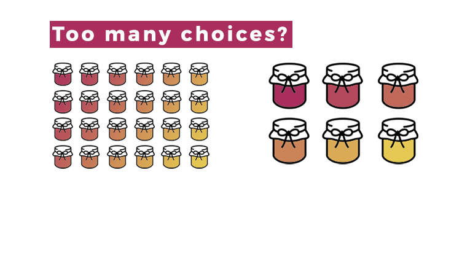

library(bidux)
interpret_stage <- bid_interpret(
central_question = "Which markets are driving performance?",
data_story = list(
hook = "Q4 revenue hit record high, but satisfaction dipped",
context = "After aggressive marketing across all regions",
tension = "West region satisfaction fell 10 points",
resolution = "Focus retention efforts on underperforming regions"
),
user_personas = list(
list(
name = "Product Manager",
goals = "Monitor weekly KPIs",
pain_points = "Too many filters to find important insights",
technical_level = "Moderate"
)
)
)Death by Dropdown?
Engineer Insightful Shiny Apps
with Behavioral Science
September 17, 2025
Enter: Behavioral Science
What is it? The interdisciplinary study of how people make decisions
(Spoiler: irrationally, yet predictably & consistently)
Classic Example: The Paradox of Choice
Researchers: Sheena Iyengar & Mark Lepper
Setting: Upscale grocery store sampling booth
Design: 24 jams vs. 6 jams display


10x higher conversion with fewer options
The Solution: Your Dashboard Journey
Think of it like a road trip
üìç Interpret where you‚Äôre going
⚠️ Notice the warning lights
üå¶Ô∏è Anticipate weather changes
üó∫Ô∏è Structure the best route
✅ Validate safe arrival
The BID Framework
üìç Interpret user needs
⚠️ Notice friction points
üå¶Ô∏è Anticipate cognitive biases
üó∫Ô∏è Structure information flow
✅ Validate understanding

What is {bidux}?
An R package that:
- ✅ Works with ANY Shiny dashboard
- ✅ Analyzes telemetry OR works without
- ✅ Auto-suggests behavioral science improvements
- ✅ Custom parameter overrides

Your behavioral scientist in the console
NOTICE: Find the Core Problems

notice_stage <- bid_notice(
previous_stage = interpret_stage,
problem = "Users are struggling to find key insights",
evidence = "Telemetry shows over 75% of filters are rarely used"
)Auto-suggested theory: Cognitive Load Theory (confidence: 90%)
Stage 2 (Notice) completed. (40% complete)
- Problem: Users are struggling to find key insights
- Theory: Cognitive Load Theory (auto-suggested)
- Evidence: Telemetry shows over 75% of filters are rarely used
- Theory confidence: 90%
- Next: Use bid_anticipate() for Stage 3 ANTICIPATE: Guard Against Biases
Stage 3 (Anticipate) completed.
- Bias mitigations: 4 defined
- Accessibility considerations included
- Key suggestions: anchoring mitigation: Always show reference points like previous period, budget, or industry average., framing mitigation: Toggle between progress (65% complete) and gap (35% remaining) framing., confirmation bias mitigation: Include alternative views that might challenge the main narrative. [1] "anchoring: Consider how anchoring might affect user interpretation; framing: Consider how framing might affect user interpretation; confirmation bias: Consider how confirmation bias might affect user interpretation; accessibility: provide clear focus indicators, sufficient color contrast, and screen reader support"

The Transformation

Real Impact Across Industries

One Thing to Remember
Dashboards don’t need more features.
They need fewer obstacles.
Let’s fix that together!
Special thanks to the
posit::conf organizers,
Shiny community,
and all of you for caring about your users